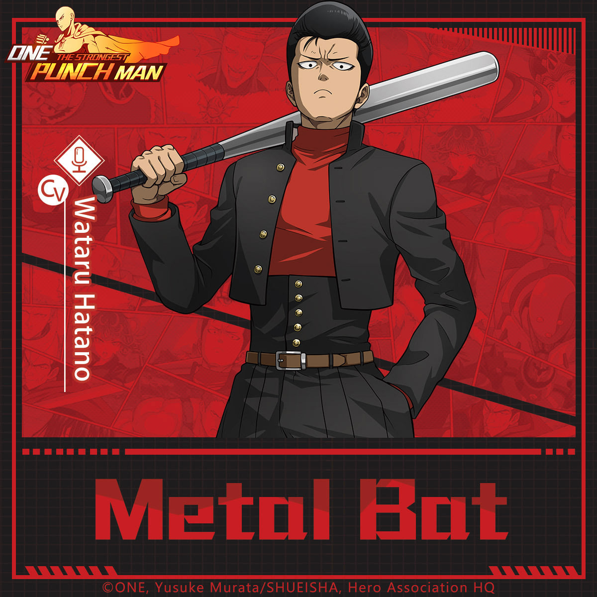
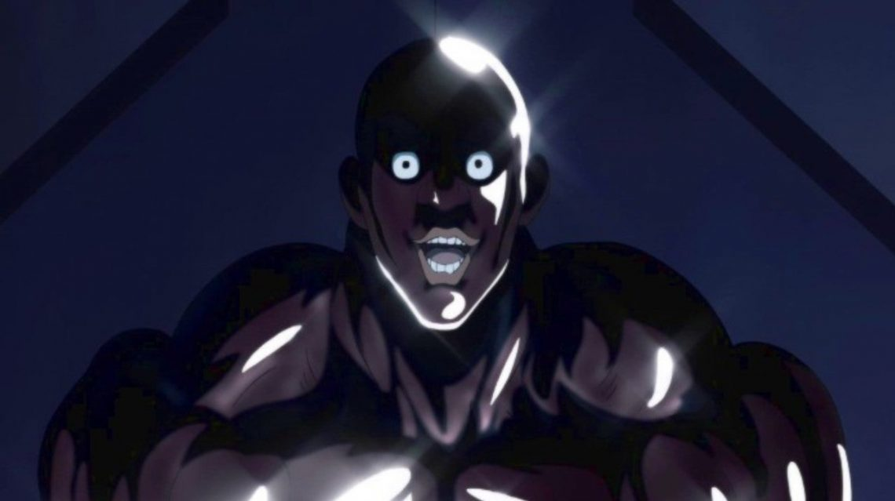
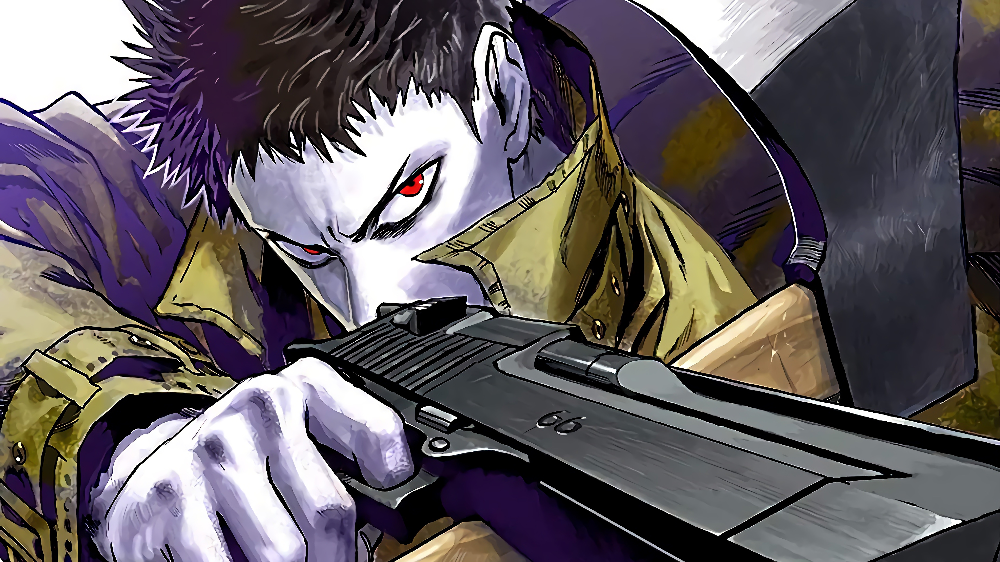
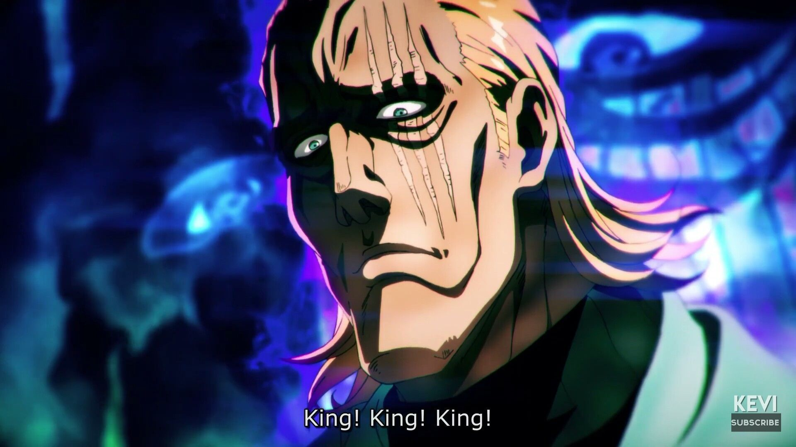
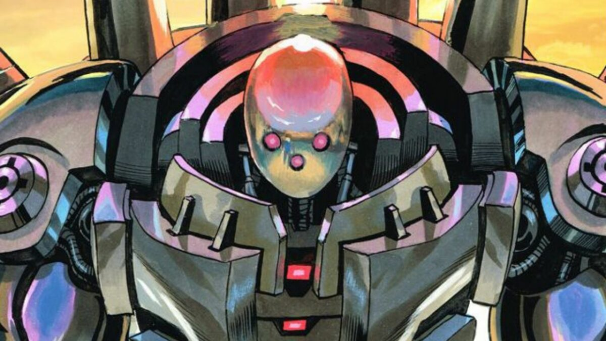
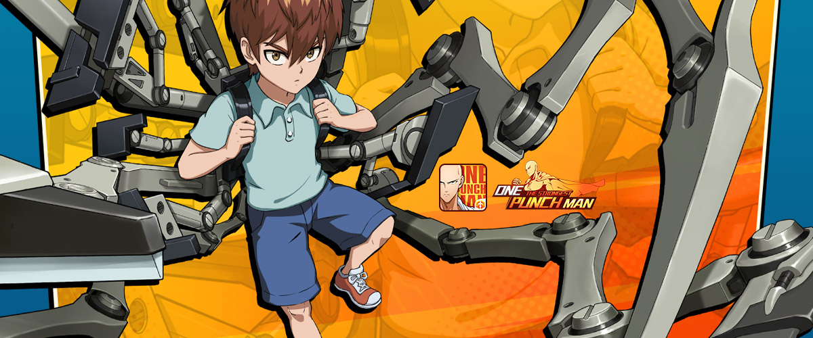
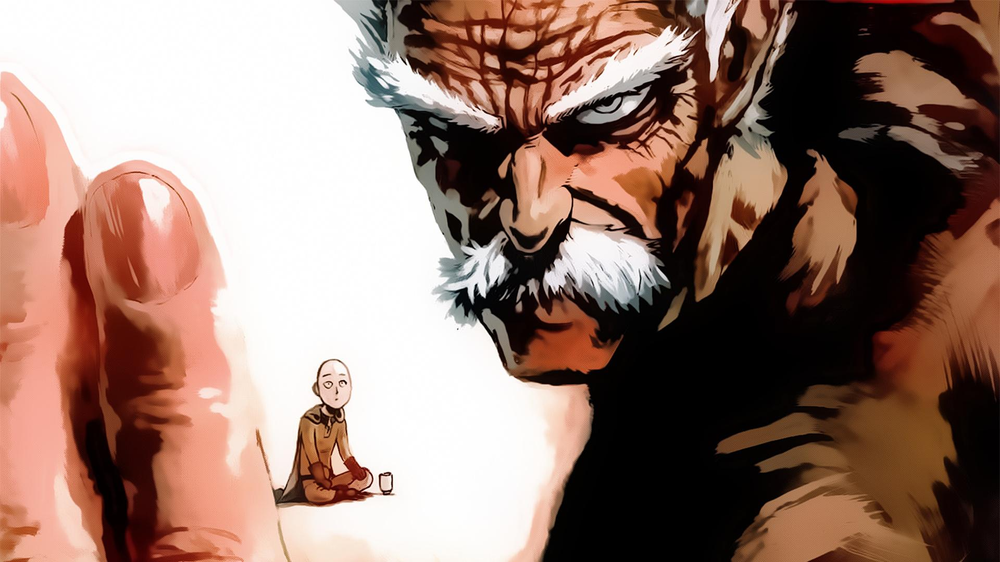
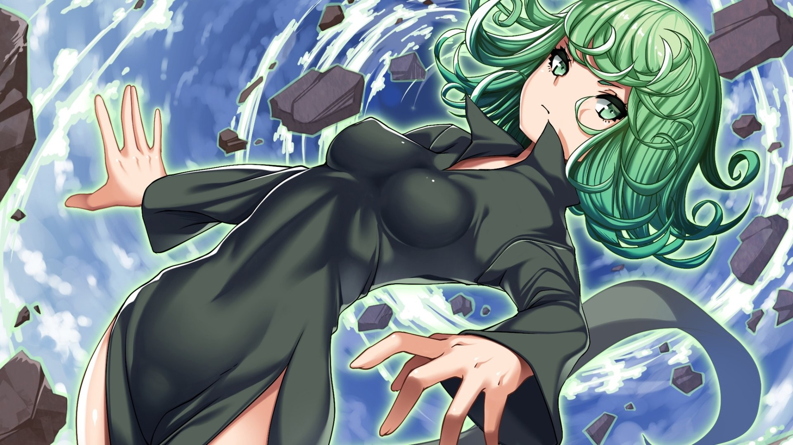
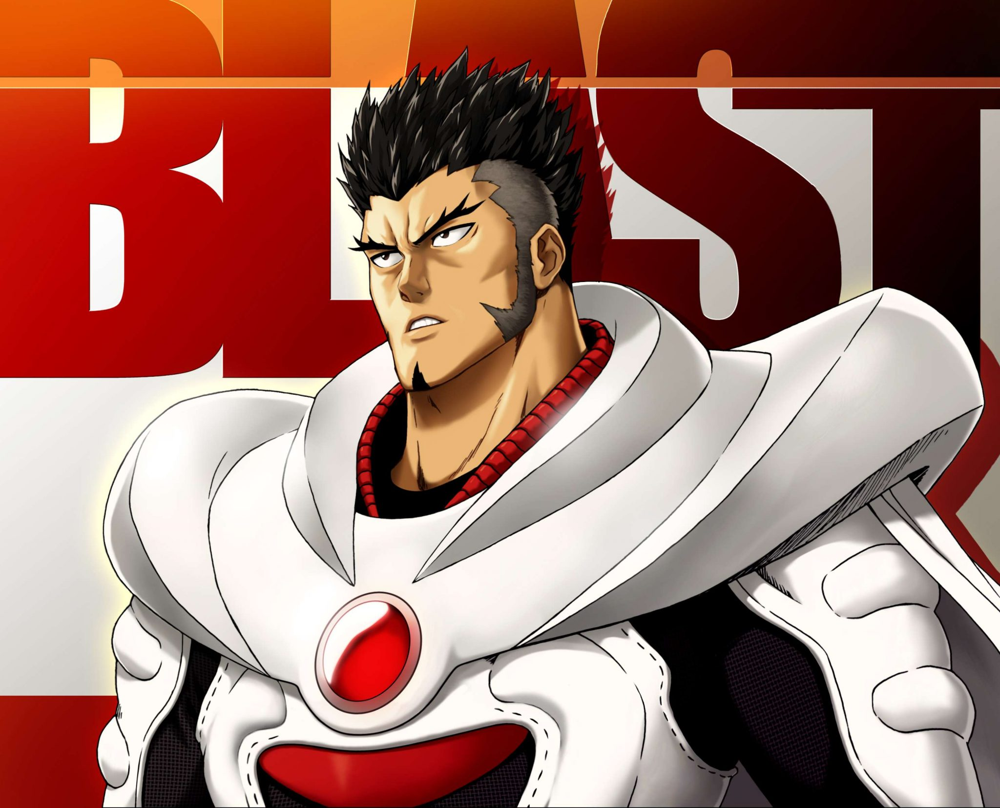

Introduction
Brief overview of the One Punch Man characters and their significance in the series.
Purpose and goals of the character documentation.
Getting Started
Instructions on how to navigate and use the One Punch Man Character Documentation.
System requirements for understanding the character profiles.
Quick start guide to familiarize users with the characters.
Metal Bat
A fiercely loyal hero, Metal Bat uses a metal bat as his weapon. His real strength lies in his fighting spirit; the more damage he takes, the stronger and more determined he becomes. He's also very protective of his younger sister.
Rank: 16
Tanktop Master

A muscled hero who believes in the power of the tank top, Tanktop Master possesses impressive physical strength. He leads the "Tanktop Army," a group of heroes who all wear tank tops and believe in its symbolic power.
Rank: 15
Genos

A young cyborg with a burning desire for justice, Genos seeks vengeance against the cyborg that ruined his life. He becomes Saitama’s disciple, aiming to grow stronger. Constantly upgrading his body for improved combat efficiency, Genos is both a formidable fighter and a loyal friend.
Rank: 14
Power: Advanced cybernetic enhancements, powerful weaponry.
Personality: Driven, disciplined, and determined.
Flashy Flash

A former ninja, Flashy Flash has blinding speed and agility. His movements are so rapid that they’re nearly invisible to the naked eye. He wields a katana and combines his ninja techniques with his incredible speed for lethal results.
Rank: 13
Watchdog Man

Resembling a man in a dog suit, Watchdog Man defends Q-City from monsters with a laid-back demeanor. He uses a combat style mimicking that of a dog and is especially adept at dealing with multiple adversaries at once.
Rank: 12
Superalloy Darkshine
With a glistening, muscular physique, Superalloy Darkshine is an embodiment of raw strength and endurance. His skin reflects light due to its toughness, and he exudes confidence in his abilities, having undergone intense training to achieve his current form.
Rank: 11
Pig God

A hero with an insatiable appetite, Pig God can consume monsters many times his size. He has an elastic body that can expand to fit his meals. Despite his appearance, he’s genuinely dedicated to his hero duties.
Rank: 10
Drive Knight

A strategic fighter, Drive Knight possesses the ability to transform, granting him multiple forms tailored for various combat situations. Each transformation, named after chess pieces, has its unique set of powers and capabilities.
Rank: 9
Zombieman
As his name suggests, Zombieman’s primary ability is his regenerative power. He can recover from almost any injury, making him virtually immortal in combat. He often employs weapons like axes and guns and methodically wears down his opponents.
Rank: 8
King
With a title like “The Strongest Man on Earth,” one would expect King to be an unbeatable warrior. However, the truth is the opposite. King is an ordinary man without combat skills, but due to a series of misunderstandings and coincidences, he’s credited for many feats he didn’t accomplish. He’s a lover of video games and often hangs out with Saitama.
Rank: 7
Metal Knight
Bofoi remains unseen, but his technological might is visible through his robots. These machines, equipped with advanced weaponry and defenses, can tackle significant threats. Often, Bofoi’s intentions seem to lean more towards data collection and technological advancement than outright heroism.
Rank: 6
Child Emperor
Beyond his youthful appearance, Child Emperor is a brilliant strategist and inventor. He relies on advanced technology, tools, and gadgets, some of which he’s designed himself. His backpack, for instance, is filled with numerous devices that can be used for various applications in battles.
Rank: 5
Atomic Samurai

A traditional samurai in appearance and demeanor, Atomic Samurai has a strong sense of honor. His swordsmanship skills are unparalleled, capable of delivering swift and precise strikes that can dissect foes at a molecular level. He has a group of dedicated disciples and often emphasizes the importance of the sword.
Rank: 4
Silver Fang
An elderly martial arts master, Bang has silver hair, sharp eyes, and an impressive physique that belies his age. Founder of the Water Stream Rock Smashing Fist martial art, he mentors aspiring martial artists in his dojo. He has a deep sense of responsibility and often takes action when significant threats emerge, with a particular soft spot for his wayward former disciple, Garou.
Rank: 3
Tornado of Terror
Standing at a diminutive stature with green hair, Tatsumaki possesses formidable psychic powers. She can manipulate vast objects, create barriers, and even alter weather patterns. Despite her might, she has a quick temper and can often be abrasive, especially towards those she views as weaker. Her relationship with her sister Fubuki, the B-Class hero, is complex, filled with both rivalry and concern.
Rank: 2
Blast
Blast remains an enigmatic figure within the Hero Association. Despite being the top-ranked S-Class hero, little is known about his abilities or his appearance in the anime, and he rarely shows himself. What remains certain is his immense strength and importance, as his name alone carries weight within the association. He’s surrounded by a lot of theories and speculations due to his mysterious nature.
Rank: 1